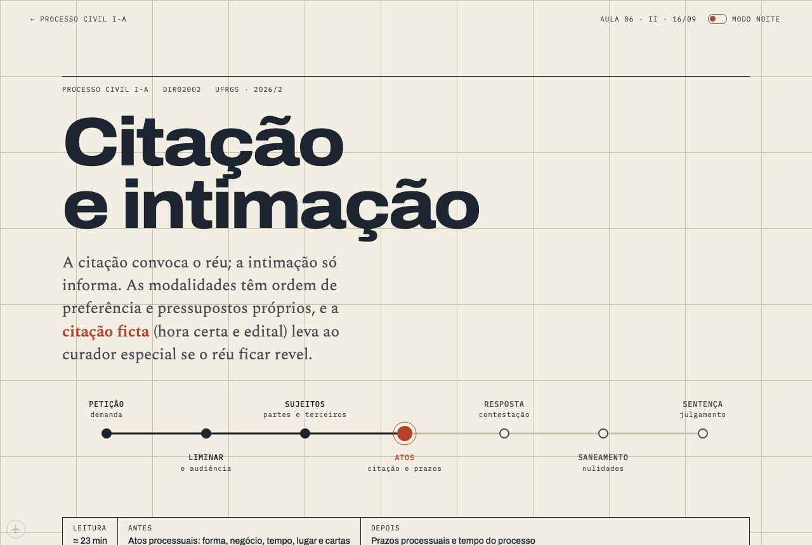
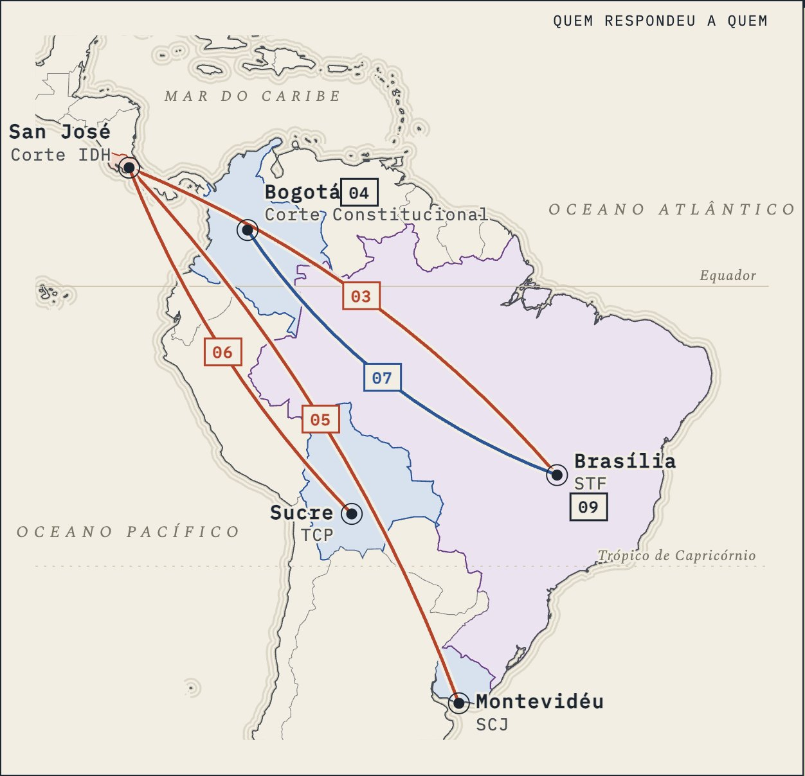
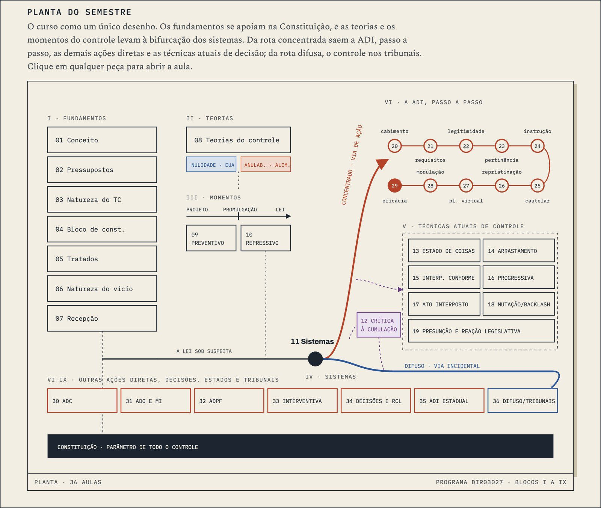
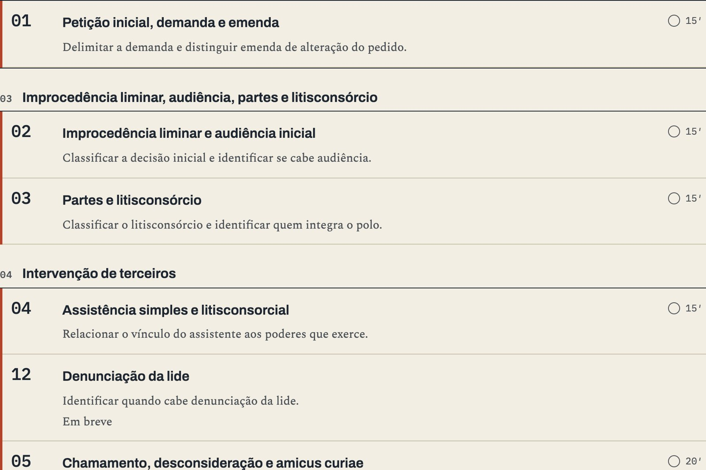
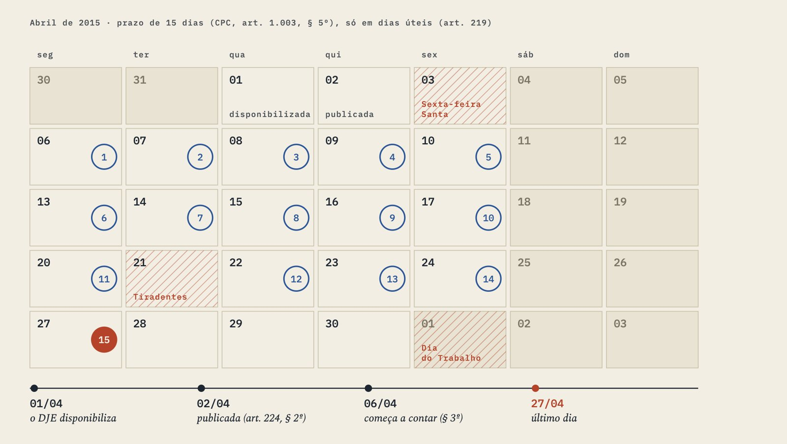
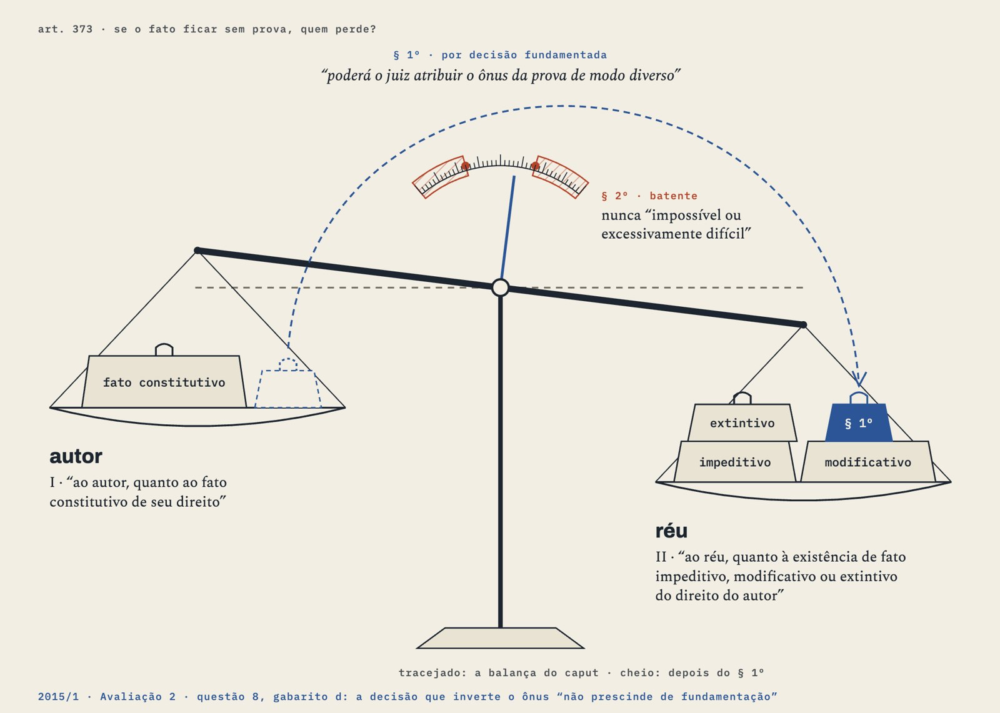
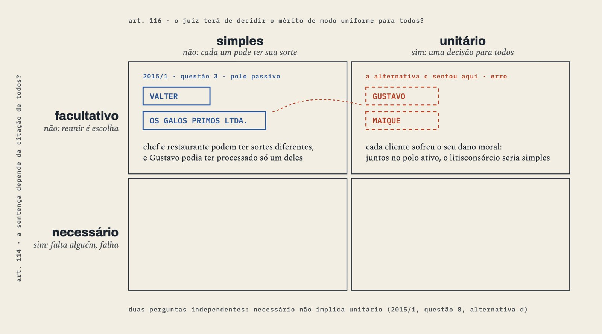
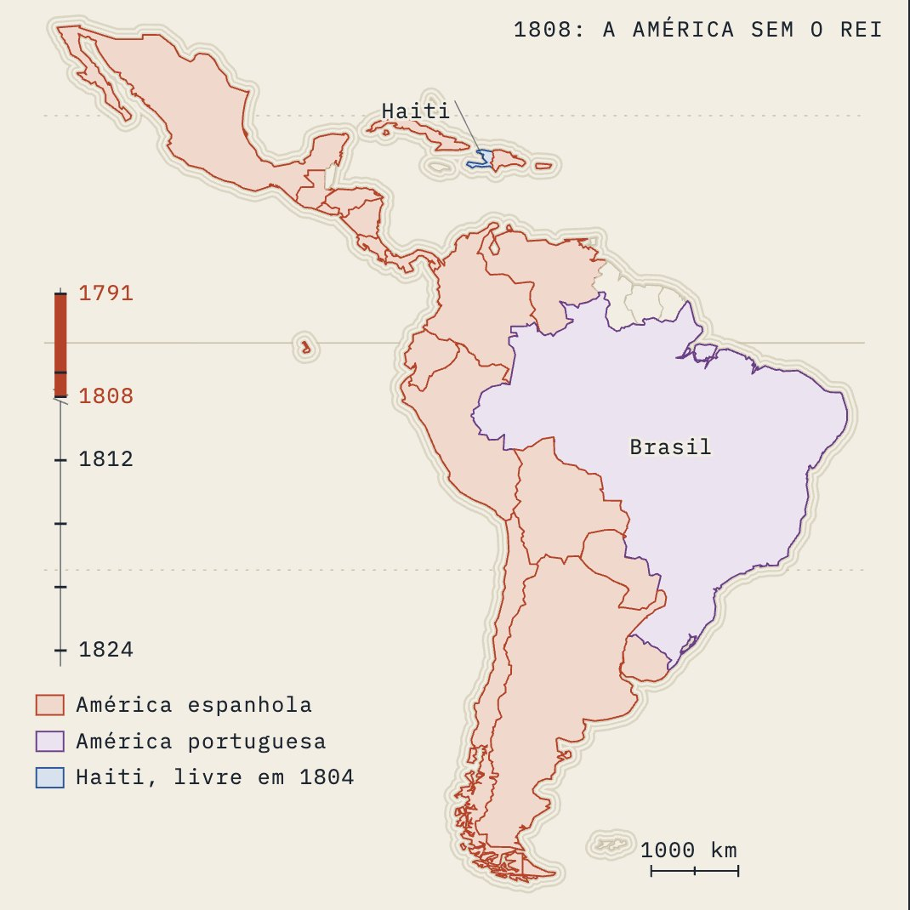
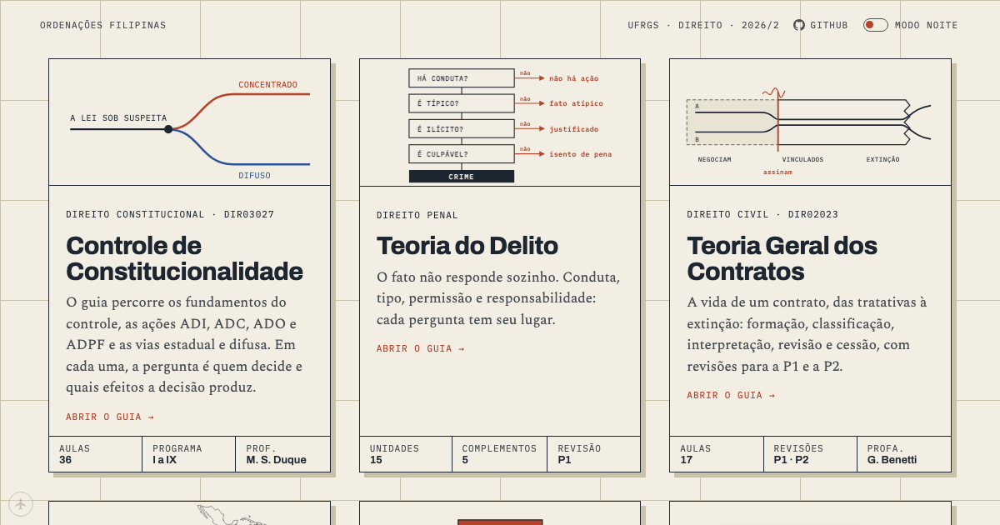

Benecles.dev builds study websites from the material a course already has.
We take the books, slide decks, court decisions, statutes and past exams a course uses and publish them as one website of short lessons. Each lesson covers one topic of the syllabus, carries figures drawn for it, and quotes a source only after a script has found the quoted words in it. Professors, universities, companies and tutoring schools send us their material, and their students or staff get the site.
- Marinoni et al. · Novo Curso, vol. 21,051 pp.
- Didier Jr. · Curso, vol. 1878 pp.
- Marinoni et al. · Novo Curso, vol. 1518 pp.
- Taruffo · La prova dei fatti giuridici512 pp.
- Barbosa Moreira · Temas, 4ª série342 pp.
- Mitidiero · Processo Civil287 pp.
- + 36 more: assigned articles, the CPC by article, Moodle case records, past exams

Processo Civil I at UFRGS assigns 3,826 pages across 42 sources. Its students read the same material as 17 lessons of 9 to 23 minutes each.
01 What a course contains
Taken from the courses already published

MapsFive courts on one map, each route a lesson where one court answered another.
Course indexesThe semester drawn as one plan. Each piece opens its lesson.
The registerEvery lesson in syllabus order, with the task it trains and its reading time.
InstrumentsA 15-day deadline counted on the April 2015 calendar, holidays skipped.
InstrumentsArt. 373 as a balance, with each party's facts on its own pan.
InstrumentsThe parties of a 2015 exam question seated in the joinder chart.
MapsThe Americas in 1808, on a timeline that runs to 1824. Source blocksThe court's own words in its own language, the reference in the header, a translation one click away.02 Who it is for
Professors, universities, companies and tutoring schools
Your books, slide decks and assigned decisions become one site your students browse by class. A quotation from your book carries the book's page in its header.
Every course in a curriculum follows the same lesson format, figures and sourcing, so a student who has read one course knows how to read the next.
Contracts, reports, regulations and case files become one compendium, cut into parts, filed under the questions they answer and traceable to the page.
Your syllabus and your students' past exams become a course whose lessons close with the exam's own questions.
03 How it is made
From a reading list to a published lesson
The specimens beside each step come from one lesson, Processo Civil I, Aula 06, on citação and intimação, the court acts that tell a party it is being sued and keep it informed of each step that follows.
The syllabus is read in its own order
Each topic becomes a lesson, with one line on what the student must be able to do afterwards and links to the earlier lessons it builds on.
- syllabus
- Comunicação dos atos. Intimação. Citação. Processo Eletrônico. Cartas…
- reader_task
- Ler AR, edital, mandado e certidão de nota de expediente e identificar o ato de comunicação registrado.
- week
- 7
- exam
- P1
Every source is catalogued
Each book, slide deck, decision and exam gets a row with its edition, its file and a SHA-256 fingerprint of that file. A book that never arrives stays listed as missing, and nothing from memory stands in for it.
- source_id
- didier-curso-vol1-2017
- role
- book_base
- title
- Didier Jr., Curso de direito processual civil, vol. 1, 19ª ed. (2017)
- sha256
- 4afef9ce79a…
- text
- text layer
Books are cut into chapters
Each book is cut along its own table of contents, and every page keeps its printed number. A script then confirms that no page is missing or counted twice.
Each chapter is matched to the lessons it serves
Every chapter is weighed against every lesson, and each decision is written down with its reason, rejections included.
- chapter
- didier-curso-vol1-2017 · ch17
- lesson
- aula-06-citacao
- role
- primary
- why
- Didier’s bounded chapter on citação supplies the essential-book doctrine for identifying the summons; the Moodle models are the assigned documents this lesson teaches readers to interpret.
Each lesson's material goes into one folder
A script copies the chosen chapters, statute articles and exam questions into the lesson's folder and writes an index tracing every file to its page.
- 00-index.mdprovenance
- 10-slides.txtslides
- 20-primary-001-didier…-ch17.txtPDF 681–698
- 20-primary-002…006 · five Moodle recordswhole
- 30-supporting-001…029 · CPC arts. 238–275by article
- 30-supporting-030…036 · doctrine, exportsbounded
- 40-background-001…003pages named
- 50-exercises-and-exams.txtP1 2015 Q11
The lesson is planned before it is written
The plan names the tasks a student can do after reading, the exam traps, each section with its source pages, and each figure with the claim it carries.
A second reader checks the plan
A different model reads the plan against the syllabus and the exam questions. It approves the plan or returns it with at most five numbered objections, and a plan returned twice goes to Claude.
Text and figures are written together
One writer drafts the prose and draws the figures in a single sitting, from the plan. As the student reads, the figure beside the text moves to the case the paragraph is about.
Every page gets the same finish
Marks, source blocks and type are shared across the site. Blue marks what a court decided and orange marks where a rule stops, on every page.

Scripts read the page before it goes live
A pull request waits until every script below passes, and the main branch is the live site.
| Script | Holds the page back when | Runs |
|---|---|---|
| quote_check | a quotation cannot be found in the source texts | before the pull request |
| slop_lint | the prose pads with hedge stacks, staged objections or ritual conclusions (32 rules) | while writing, and before the pull request |
| house_check | the page lacks the shared marks, source blocks or figures | before the pull request |
| marks_lint | a mark is overused, or plain bold stands where a mark belongs | before the pull request |
| breakscan | text clips or overflows at 1,280 pixels | at Claude’s reading |
| check_all | a course front fails to regenerate byte for byte, or a link breaks | CI, on every push |
| offline build | the offline copy of the site differs from the published files | CI, on every push |
In 368 texts of human legal doctrine, negated inference (phrases like “não basta”) ran at 0.14 per thousand words; on 170 of our pages it ran at 2.43. The rule now caps it at 0.5, and every other rule in slop_lint has its limit where no more than one human text in ten would be flagged. Method and numbers.
A script is trusted only after it has held back a page known to be bad.
04 How we work
Who does what, and how mistakes stay fixed
Benecles
Chooses the courses, sets the priorities and decides what gets cut. The open decisions listed in CEO.md are his.
Claude
Writes the brief for each step, owns the writing standard and the design system, draws figures, rebuilds reference lessons by hand and signs off every step. Anthropic’s model, working through Claude Code.
Codex
An orchestrator splits each brief into units of six or fewer and runs up to sixteen workers at once, Sol for the course map and the review and Luna for the other steps. OpenAI’s models.
Scripts
Each step has a script that can hold the work back. The scripts live in the repository beside the pages they read.
- symptom
- Prose hugs the left edge of a wide screen (x = 0) while headings sit centred
- cause
- <div class="prosa"> placed directly in <body>
- fix
- Wrap in <div class="wide">
- catches it
- anatomy_check LOOSE-PROSA, in check_all
- found
- A fictional “Comunidade C” carried the lesson while real Brazilian material exists
- rule
- Carriers are real: an article of the CF, a case, a statute.
- applies to
- S5a, S5
When a script or a reader catches a fault, two records change. The bug catalogue gains a row naming the check that now catches it, and the flight log gains a numbered rule that every lesson in progress applies before its next step.
A new Claude session reads CEO.md first and continues from where the previous session stopped.
Standards and logs Source Pipeline · Writing Standard · House Manual · Visual Genres · CEO.md · Flight log · Bugs
05 Prior work
Ordenações Filipinas, law courses for UFRGS

Ordenações Filipinas
Seven law courses, from constitutional review to civil procedure. Law students at UFRGS and USP study with it.